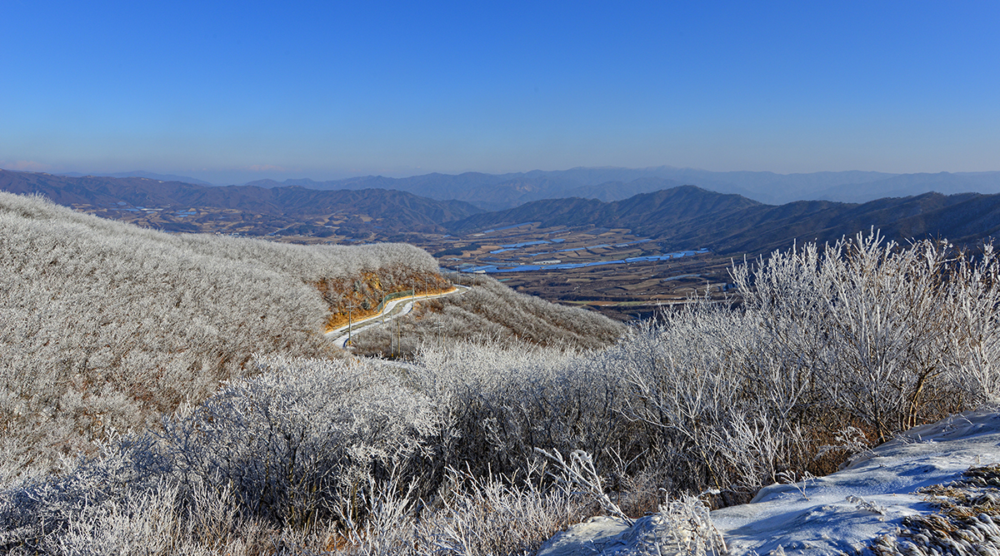

我想当环路快走到头的时候，从四面八方聚到这里共走同一条路的人们，心中应该浮现同样的想法。欢迎大家来到DMZ环路，留下平时难以经历的美好的回忆，做一次近距离感受历史和自然的特殊的经验。
除野猪岭路以外的其它三条路线，可以一个小时为单位分段徒步穿越除田间小路以外的树林路区间，显得尤为舒适宜人。
Hot! Place

这里的地形通常被称为“宾治盆地”。
这里的地形通常被称为
这是位于杨口郡亥安面的盆地，因为韩国战争时期有一位外国随军记者发现其形状很像潘趣酒碗而取此名。目前是韩国唯一民间人出入控制线以内仍有居民居住的面所在地，在地政学上具有特殊的意义。这一带在6.25战争时期曾经展开过宾治盆地战斗、兜率山战斗、加七峰战斗等激战，至今还能发现很多“地雷”标记牌。虽然罕见的场景会引起人们的好奇心，但又是一个让人感到紧张的地方。
DMZ宾治盆地环路，由于其地域特殊性，如果没有林间路体验向导的陪伴，禁止游客擅自探访。在民间人出入控制线内修建的林荫道，周围还有很多尚未排除的雷区，游客必须遵从导游的指示。尽管如此，之所以仍有很多人选择这条环路，是因为这里对于在尚未结束的战争痛苦中生活的我们来说具有非常重大的意义。
探访路分为4条路线。要对路线作简要的说明，第一条是单程14Km，约需4个小时的和平树林路。该路线从咨询中心出发，一路上能够看到卧牛山瞭望台、桦树林、大型掩体等军事分界线的象征物。在这里人们可以亲眼目睹并感受到在日常生活原以为理所当然的和平是多么的宝贵。
接下来是五柳田间小路，需要5个小时，单程为21.12Km。也是从咨询中心出发，通过该路线可以游览东幕洞、五柳水库、野花公园、宋家峰瞭望台、DMZ野生植物园和史前遗址。这条路线被划为天然纪念保护区，最大特点是在森林基因资源保护林内可以看到多种植被和被指定为天然纪念物的野生动物的痕迹，还能看到盆地地形的秀丽景观。
万岱田野路单程21.9公里，是所有路线中耗时最长、难度最高的路线。该路线经过万岱村、DMZ野生植物园、城隍堂、万岱水库、金刚松造林地、野猪岭树林路等景点。其最大魅力在于，可以看到守护城隍庙的保护树——小橡树，走在大岩山脚的山脊和山谷中，观赏松树造林地下面一马平川的万岱平原的宏伟景观。
最后是野猪岭路。虽然单程仅为16.2公里，但可以说是颇有难度的路线。该路线经过白桦林、雷区、临时控制哨所、阿里郎岭、军用直升机场、野猪岭、停车防御线、万岱田园路等景点。走在这里会切身感受到自己真的已进入到DMZ。通过雷区公路，看着临时控制哨所和防御线，会感觉到战争留下的痕迹。但是沿着大岩山脊一路走下去，金刚山、云峰和斯大林高地等现在无法前往的北方山川和向南延伸的雪岳山、点凤山、香炉峰等山峰，像一幅美丽的水彩画展现在眼前。
虽然每条路线都有不同的魅力，但是几乎在所有路线都能够沿着环路欣赏周围美丽的风景，让人感到既神奇美妙又感慨万千。因为在过去半个多世纪以来控制民间人出入，所以这里人迹罕至，生态系统至今保存完好。寻找平时难以见到的野生动物痕迹的乐趣和观看野生植物，将成为一次非常神奇的经历。而且，在山路上徒步，呼吸新鲜空气，还能使人们感到心情舒畅而轻松。走在山路上，欣赏风景，走走停停，过不了多久就会气喘吁吁。
一路上设有很多休息区，为走路观景疲惫的人们提供休息。当感觉到呼吸困难的时候暂停脚步，呼吸从树林喷出的绿色空气，举目欣赏眼前秀丽的自然风景。大自然绿色的气息会让您感觉到全身充满活力。重复很多次走走停停以后，刚开始还不太敢相信走完全程的人们，不知不觉中也会沉浸在徒步的乐趣之中。正所谓大自然的回报跟走路的艰辛成正比。尤其是站在山峰上俯瞰的宾治盆地，除了美感之外，还由于罕见的地理特性而也给人一种神秘的感觉。看着在开阔的山脚下形成坑坑洼洼的地形，可以理解战争当时成为激战地的原因所在。
沿着山路一路走上去，处处可以看到“地雷”标记牌。毕竟是除非在新闻上看到，平时很少能接触的事情，所以眼前的场景既让人感到神奇，又有一种恐怖的感觉。一想到至今仍残留着已过半个世纪的战争痕迹，还有很多未排出的地雷，心里涌现出一股莫名的悲伤。面对着停战而非终战的现实，再次希望大家所期盼的终战早日来临。
但是，并非因发生过战争的地方而没有希望。人们对人迹罕至的地方也许会感到一些危险，可这里又是一个充满神秘的地方。在野生花盛开的野花公园里一簇簇花丛犹如电影中的一个场景展现在眼前，激动的心情油然而生。DMZ野生植物园最适合观赏各种植物。虽然是带着伤痛的土地，可是在这里绽放的大自然的生命，给人们一种像植物发芽一样充满希望的力量。
什么都不做，只是走在山路上也是不错的选择，但是听着解说了解平时很难接触到的领域，会让我们重新审视每一朵花每一棵树以及动物们留下的痕迹等平时很容易忽略的事物。
这就是杨口DMZ宾治盆地环路带给我们的意义所在。走在这里能够近距离感受到平时觉得理所当然的和平也是来自不易的，我们未曾环顾过的大自然中许多生命的痕迹。也许悲剧是从人开始的，也应该由人来结束悲剧。我们非常清楚在一路上经历的惨痛悲剧和美好和平中要选在哪一条路。我们要忘掉过去的悲伤，沿着光明的道路，跟着环路带给我们的希望走下去。
我想当环路快走到头的时候，从四面八方聚到这里共走同一条路的人们，心中应该浮现同样的想法。欢迎大家来到DMZ环路，留下平时难以经历的美好的回忆，做一次近距离感受历史和自然的特殊的经验。
除野猪岭路以外的其它三条路线，可以一个小时为单位分段徒步穿越除田间小路以外的树林路区间，显得尤为舒适宜人。